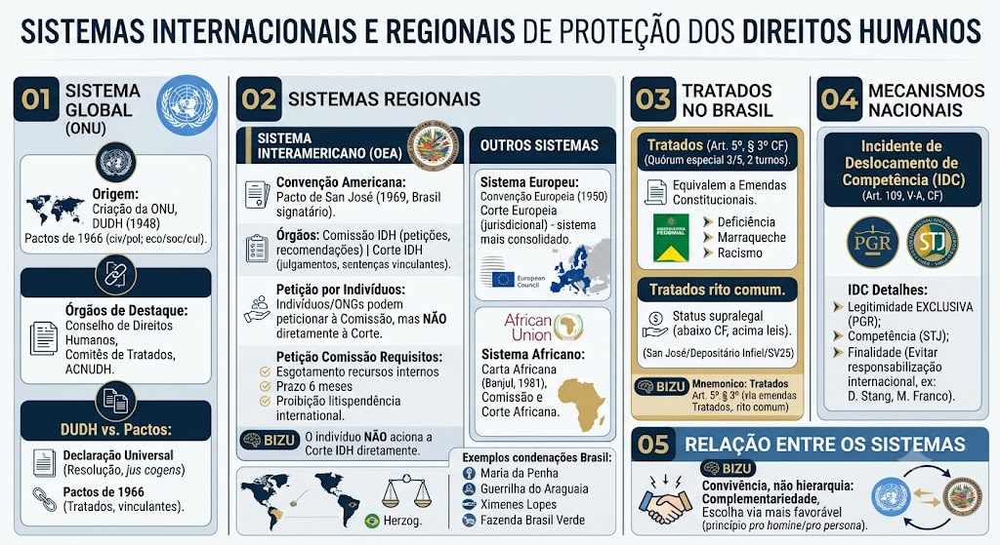

Origem
Origem
Criado no âmbito da Organização das Nações Unidas, tem como marco a Declaração Universal dos Direitos Humanos de 1948, complementada posteriormente pelos dois grandes Pactos de 1966 (direitos civis e políticos; e direitos econômicos, sociais e culturais).
Estrutura em dois pilares
Estrutura em dois pilares
O Sistema Global de Proteção dos Direitos Humanos da ONU é dividido em dois grandes pilares:
1. Órgãos Principais (baseados na Carta da ONU):
- Conselho de Direitos Humanos da ONU — órgão político-consultivo da ONU, substituiu a Comissão de Direitos Humanos em 2006. Ele conduz a Revisão Periódica Universal (RPU), que avalia o cumprimento dos compromissos de direitos humanos por todos os Estados-membros da ONU a cada 4-5 anos.
- Alto Comissariado das Nações Unidas para os Direitos Humanos (ACNUDH) — órgão técnico-científico que coordena as atividades do Sistema das Nações Unidas no campo dos direitos humanos.
2. Órgãos de Tratados (Comitês):
São órgãos de monitoramento criados pelos próprios tratados internacionais. Cada tratado tem seu comitê específico, composto por expertises independentes eleitos pelos Estados-partes. Esses comitês recebem relatórios periódicos dos Estados e emitem pareceres/recomendações, mas não proferem sentenças judiciais vinculantes definitivas (diferente do sistema interamericano).
📌 Comitês principais:
- Comitê de Direitos Humanos (Pacto Internacional de Direitos Civis e Políticos — PIDCP)
- Comitê contra a Tortura (Convenção contra a Tortura)
- Comitê CEDAW (Convenção sobre a Eliminação de Todas as Formas de Discriminação contra a Mulher)
- Comitê sobre os Direitos da Criança (Convenção sobre os Direitos da Criança)
- Comitê de Prevenção da Tortura (CAT — órgão distinto do Comitê contra a Tortura)
- Comitê de Direitos Econômicos, Sociais e Culturais (PIDESC)
DUDH vs. Pactos de 1966
DUDH vs. Pactos de 1966
Declaração Universal (1948): É uma Resolução da Assembleia Geral da ONU. Juridicamente, nasceu sem força cogente (não era um tratado), embora hoje tenha valor de jus cogens e força moral/política universal.
Pactos de 1966 (PIDCP e PIDESC): São Tratados Internacionais. Criam obrigações vinculantes e juridicamente obrigatórias aos Estados que os ratificam.
O que é a RPU
O que é a RPU
A Revisão Periódica Universal (RPU) é um mecanismo do Conselho de Direitos Humanos da ONU que avalia o cumprimento dos compromissos de direitos humanos por todos os Estados-membros da ONU a cada 4-5 anos. É um processo de revisão por pares, no qual os Estados apresentam relatórios sobre sua situação de direitos humanos e recebem recomendações dos demais Estados. A RPU é um dos principais instrumentos de monitoramento do Sistema Global.
Órgãos
Petição por indivíduos
Petição por indivíduos
Qualquer pessoa ou ONG pode peticionar à Comissão Interamericana. No entanto, o indivíduo NÃO pode acionar a Corte diretamente — apenas a Comissão ou outros Estados podem levar um caso para julgamento da Corte.
Requisitos para peticionar na Comissão
Requisitos para peticionar na Comissão
Para que uma petição seja admitida, devem ser observados os seguintes requisitos:
Lembrete de Ouro
Lembrete de Ouro
O indivíduo NÃO aciona a Corte IDH diretamente. A petição vai primeiro para a Comissão. Se o Estado não cumprir as recomendações, a Comissão (ou outro Estado) remete o caso para a Corte.
Condenações do Brasil na Corte IDH
Condenações do Brasil na Corte IDH
Além do caso Maria da Penha (omissão em violência doméstica), o Brasil já foi condenado em outros casos emblemáticos:
Posição do STF sobre o Pacto de San José
Posição do STF sobre o Pacto de San José
O STF pacificou que os tratados de direitos humanos aprovados sem o quórum de emenda constitucional (Art. 5º, § 3º) possuem status supralegal (acima das leis ordinárias, abaixo da Constituição). Exceção: o Pacto de São José da Costa Rica, no que tange à prisão do depositário infiel, teve seu efeito paralisado pelo STF, conferindo ao tratado efeito paraconstitucional ou supralegal intransponível nesse aspecto específico. Essa posição foi consagrada pela Súmula Vinculante 25, que veda a prisão civil do depositário infiel, mesmo havendo previsão constitucional expressa no art. 5º, LXVII, da CF/88.
Sistema Europeu
Sistema Europeu
Baseado na Convenção Europeia de Direitos Humanos (1950), com a Corte Europeia de Direitos Humanos como órgão jurisdicional — considerado o sistema regional mais consolidado do mundo.
Sistema Africano
Sistema Africano
Baseado na Carta Africana dos Direitos Humanos e dos Povos (Carta de Banjul, 1981), com a Comissão e a Corte Africana de Direitos Humanos e dos Povos.
Tratados aprovados com quórum especial (Art. 5º, § 3º da CF)
Tratados aprovados com quórum especial (Art. 5º, § 3º da CF)
Aprovados em cada casa do Congresso Nacional (Câmara e Senado), em 2 turnos, por 3/5 dos votos. Equivalem a Emendas Constitucionais.
📌 Exemplos: Convenção da ONU sobre Direitos das Pessoas com Deficiência (e seu Protocolo), Tratado de Marraqueche, Convenção Interamericana contra o Racismo.
Tratados aprovados pelo rito comum
Tratados aprovados pelo rito comum
Possuem status supralegal (ficam acima de todas as leis ordinárias e códigos, mas abaixo da Constituição Federal).
📌 Exemplo principal: Pacto de San José da Costa Rica (que tornou inexigível a prisão civil do depositário infiel no Brasil — Súmula Vinculante 25 do STF).
Mnemônico
Mnemônico
📌 Quórum de 3/5 em 2 turnos = Emenda Constitucional.
Rito comum = Supralegal.
Incidente de Deslocamento de Competência (IDC)
Incidente de Deslocamento de Competência (IDC)
Previsto no Art. 109, V-A, da CF/88, o IDC é uma ferramenta processual que permite transferir investigações ou processos da Justiça Estadual para a Justiça Federal em casos de grave violação de Direitos Humanos, quando o Estado local demonstrar incapacidade de dar resposta adequada. O pedido é feito pelo Procurador-Geral da República ao Superior Tribunal de Justiça (STJ).
Detalhes sobre o IDC
Convivência, não hierarquia
Convivência, não hierarquia
O sistema global e os sistemas regionais não competem entre si: convivem de forma complementar, e a vítima costuma poder escolher a via mais favorável (princípio pro homine / pro persona).
Mapa-mental
Material de estudo: Sistemas de Proteção
Material complementar · Ver fonte no GitHub
Mecanismos Nacionais de Proteção
Detalhes sobre o IDC
- Legitimidade EXCLUSIVA: Apenas o Procurador-Geral da República (PGR) pode suscitar o IDC.
- Competência para julgar: O pedido é julgado pelo Superior Tribunal de Justiça (STJ).
- Finalidade: Evitar que o Brasil seja responsabilizado internacionalmente por omissão ou ineficiência da Justiça Estadual na apuração de graves violações de direitos humanos (ex.: Caso Dorothy Stang, Caso Marielle Franco).
Relação entre os sistemas
Mapa-mental
